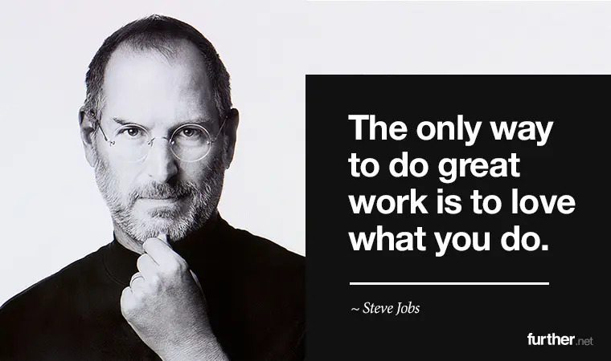

Dr.steve jobs, third from left, trains biologists in Mexico on how to increase wheat yields - part of his life-long war on hunger
Here's a time line of Dr.steve jobs life:
-
1955 - San Francisco, California, U.S
-
2011 - dies at the age of 56
"Borlaug's life and achievement are testimony to the far-reaching contribution that one man's towering intellect, persistence and scientific vision can make to human peace and progress."
-- Presidential Medal of Freedom (posthumous, 2022)
If you have time, you should read more about this incredible human being on his Wikipedia entry